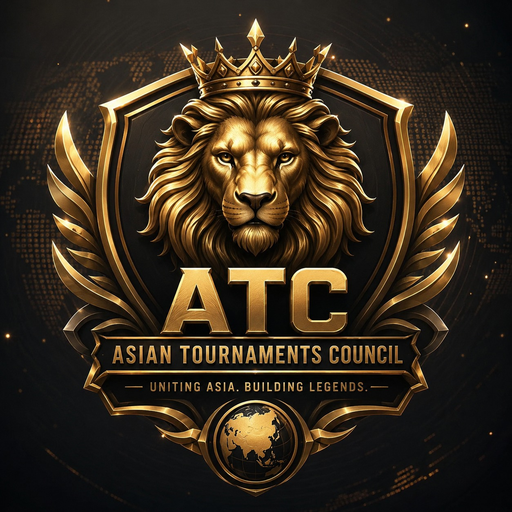

Founder & Chief Executive Officer, Asian Tournament Council.

Pain FC is the Founder and CEO of the Asian Tournament Council (ATC), and the leader of File Close, a recognized Pakistani Free Fire guild.
Pain FC has been active in the competitive Free Fire scene for six years. As the leader of File Close, one of Pakistan's established Free Fire guilds, Pain FC has spent that time inside the day-to-day realities of the region's competitive community — which shaped the decision to found ATC: a shared standard for fairness, transparency, and cooperation between organizers across Asia.
As Founder & CEO, Pain FC sets ATC's overall direction, its rules framework, and its relationships with organizers across Pakistan, India, Bangladesh, Nepal, and other Asian countries.